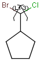
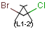
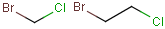
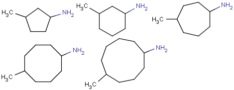

Throughout this section, icons appear next to features whose functionality that is not available in every version of MarvinSketch. The green check mark indicates that this feature is avalaible in the:
| application | |
| signed (Swing) applet | |
| AWT applet |
A new, blank molecule is created when you first launch MarvinSketch. You
can immediately begin working with this molecule. A MarvinSketch window can
hold only one molecule at a time, so all work you do within the
canvas is considered part of the same molecule. You can create new,
blank molecule at any time during your session by choosing
File > New from the menu bar. This will open a new
molecule and discard any unsaved changes to the molecule you were
previously working with.
The application allows you to work with
multiple molecules in multiple windows by choosing File
> New > New Window .
Open an Existing Molecule File |
|
|
You can open existing molecule files by choosing File > Open on the menu bar. This will load your saved molecule file into Marvin and discard any unsaved changes to the molecule you were previously working with.
You can also Paste existing structures from other windows to the open molecule. This will add the new structure to the currently open molecule, it does not create a new molecule.
Save Molecule |
|
|
You can save the molecule to any of the supported file formats. This will allow you to open and work with this molecule later. The default behavior of the Save button is to save the molecule to the same file it was opened from, in the same format. If you want to change the file name or format, choose Save As. If you are working with a new molecule, Save will function the same as Save As.
The Save Image choice in the File menu allows you to save an image of the molecule in the sketcher. Marvin supports the following image formats: JPEG, PNG, PPM, POVRay, and SVG. A saved image cannot be opened for later editing in Marvin.
|
|
|
You can print an image of the current molecule by choosing File > Print.
You can create structures using atoms, bonds, and templates.
Select an atom from the little periodic table, the Periodic Table pop-up window, or by shortcut.
Move the mouse into the molecule canvas. You will see the symbol of the selected item at the tip of your cursor. It can be placed in the molecule by left-clicking on the desired location.
Marvin is chemically intelligent. It will account for implicit hydrogens and set the charge according to valence rules.
You can replace any atom in the molecule by placing a new atom on top of it.
Select a bond type using the Bond toolbar button or by shortcut.
To link two existing atoms, click on one then drag the cursor to the other.
Marvin will allow you to draw a bond between any two atoms in the molecule. Valence errors will be highlighted (if that option is enabled).
To draw a bond from a single atom, simply click the atom. A carbon atom will be added at the other end of the bond.
If you add a bond to empty canvas space, a carbon atom will be added to each end of the bond.
You can replace any bond in the molecule by placing a new bond type on top of it.
Bond types can also be changed using the Bond pop-up menu. Single bonds can be changed to Double or Triple by left-clicking on them.
MarvinSketch provides several predefined chemical structures, called templates (e.g., cyclopenthane, cyclohexan, benzene). Some templates are accessible directly from the toolbar. The remainder can be accessed via separate pop-up windows. The full list of MarvinSketch templates is available through the Templates menu.
Select a template using the Templates Menu or Templates toolbar area.
Place the template in the molecule by left-clicking on the desired location.
You can place a reaction arrow on the canvas at any time, even on a blank canvas. Reaction errors are indicated by a red box around the reaction arrow. Only one reaction is allowed per molecule.
Select the React button. You will see the reaction arrow on the tip of the cursor when you move the mouse into the canvas area.
Click the location of the tail of the arrow.
Drag the mouse and release at the location of the head.
Once you have placed a reaction arrow on the canvas, MarvinSketch considers each part of the molecule in relation to the reaction. All parts of the molecule that are behind the arrow are considered reactants. Everything in front of the arrow is a product. Anything placed along the arrow is considered an agent. The validity of the drawn reaction will automatically be checked by Marvin. See Reactions for more information on using and disabling this feature.
The arrow tool provides the easiest manual way to map corresponding reactant and product atoms. Select the arrow tool, hold down the left mouse button on a reactant atom, and drag it to the corresponding product atom. The same map number is added to both atoms marking, that they represent the same atom on the two sides of the reaction scheme. There are also keyboard shortcuts for mapping. Type m8, for example, and click on an atom. Atom map 8 is assigned to that atom.
Marvin contains an automapper tool as well (available from the Edit/Atom Mapping/Auto Map menu) assigning map numbers to all selected atoms of a reaction automatically.
Map numbers of the selected atoms can be removed by the Edit/Atom Mapping/Clear Map menu item, or by typing m0 for the selected atoms.
An R-group query describes a set of derivatives in with one query structure. Draw the root structure and place some R atoms either from the "More" dialog, from the popup menu or by typing a corresponding label such as "R1" on the keyboard. Draw the variable R-group ligands and select those substituting the R1 atom. If you type "R1" now, the selected groups will be marked with "R1". Additional R-group conditions (Occurence, RestH, If-then) can be set in the R-logic dialog available from the Edit/Attributes menu.
To draw a (poly)line, rectangle or text box, use the Insert menu. Point the mouse to the desired position on the canvas, click and hold the left button, move the mouse and release the button. After placing a text box, you can immediatelly use the keyboard to type a text.
To change the contents of a text box, choose Select mode, click on the box, then use the keyboard.
The shape of an object is changeable or resizeable by dragging one of its points to do it.
You can draw link atoms using the popup menu in two ways:
Marvin will advise you if it is not possible to create a link node for the specified configuration (for example at ring fusions).
Outer (non-repeating) bonds will be denoted by brackets crossing them, and the repetition numbers will be put on the atom. All portion of the molecule connected to the link atom through non-outer bonds are supposed to repeat together with the atom. See examples below.
| Molecule with link node | Meaning |
|  | |
|  |  |
|
 |
To edit a link node repetition number or change outer bonds, repeat the drawing steps above. To make a link atom ordinary atom again, select "Off" from the "Link node" submenu.
Set Selection mode on by clicking the Select button.
To select a single atom, click on it.
To select two joined atoms, click on the bond that links them.
To select a rectangular region, click at one corner of the desired region and drag the mouse to the opposite corner. While the mouse button is pressed down, a guide will be displayed to aid you.
To select a non-rectangular region, use the lasso select function.
Click anywhere on the canvas and release the mouse button.
Draw the region with your mouse (leaving all mouse buttons unpressed). A blue guide line will appear where you have drawn. A pink line will connect the start and end points.
When you have finished drawing the region, click the mouse. In the event that you have not closed the region, the pink line will be used to close it for you.
You can unselect all by clicking an empty area of the canvas.
Using the Erase button:
Set Erase mode on by clicking the Erase button.
To erase a single atom or bond, click on it.
To erase a rectangular region, click at one corner of the desired region and drag the mouse to the opposite corner. While the mouse button is pressed down, a guide will be displayed to aid you.
To select a non-rectangular region, use the lasso erase function.
Click anywhere on the canvas and release the mouse button.
Draw the region with your mouse (leaving all mouse buttons unpressed). A blue guide line will appear where you have drawn. A pink line will connect the start and end points.
When you have finished drawing the region, click the mouse. In the event that you have not closed the region, the pink line will be used to close it for you.
Using Selection mode:
Select a portion of the structure.
Click the Cut button or use the DELETE button on your keyboard.
Using pop-up menus:
Right click on an atom or bond.
Select Remove from the pop-up menu.
You can edit a molecule using the methods described in How To Draw Structures and How To Delete A Structure.
You can alter a molecule by directly editing its source in the Edit Source Window. You can view and edit the source in any of the supported file formats. To change format, simply select the desired one from the Format Menu. To reload the molecule described by the text in this window into the MarvinSketch canvas (including any changes you may have made), select File > Import. This will close the Edit Source Window.
Marvin allows you to clean your molecule in either 2D or 3D. Cleaning will calculate new coordinates for the atoms. Generating conformers and choosing the favored one is also supported (in the Swing version). You can initiate cleaning via the Edit > Clean submenu.
You can toggle the display of rings as aromatic using the Edit > Bonds submenu.
There is a wide range of functions related to the display of the molecules. These settings can be found in the View menu and the Preferences dialog. Additionally, you can move, rotate, and zoom in/out on the structure.
You can move or rotate a selected structure.
Select the part of the structure you wish to move.
Moving the selection:
Move the mouse pointer toward the center of the selected structure until a blue rectangle appears.
Translate the selection by dragging the mouse.
Rotating the selection:
Move the mouse pointer toward the "edge" until a blue gear appears.
Rotate the selection by dragging the mouse.
You can set the magnification of the molecule on the Canvas by the Zoom buttons. When a molecule is loaded into the sketcher it is scaled automatically to fit the window.
For more information, see Structure Display Options common to MarvinSketch and MarvinView.
Saving Display Options |
|
|
Choosing View >Open 2D Viewer or Open 3D Viewer launches a MarvinView window containing the current molecule from the Sketcher.
Sketcher Window |
MarvinSketch supports transfer of data between Marvin and other chemical
drawing applications, between multiple Marvin windows, and to/from the desktop
and file manager.
See
Cut/Copy/Paste and Drag & Drop Functionality for more information.
The table below contains a list of available shortcuts in MarvinSketch.
|
Keyboard shortcut |
Function |
|---|---|
|
CTR+A |
Select all |
|
CTR+C |
Copy |
|
CTR+X |
Cut |
|
CTR+V |
Paste |
|
CTR+Y |
Redo |
|
CTR+Z, ALT+BACKSPACE |
Undo |
|
CTR+L |
Copy as SMILES |
|
CTR+O |
File open (if available) |
|
CTR+S |
Save to file (if available) |
CTR+Shift+S |
Save as... (if available) |
|
CTR+P |
Print (if available) |
|
CTR+M |
Display Periodic Table (More window) |
|
CTR+N |
Create a new window |
|
CTR+W |
Close current window |
|
CTR+Q |
Exit from the application |
CTR+F |
Select conformer |
CTR+2 |
Clean in 2D |
CTR+3 |
Clean in 3D |
F5 |
Exit from transformation mode and return to the Normal Sketching mode. |
F6 |
Switch on the Zoom/Rotate mode. |
F7 |
Enter into the Rotate in 3D mode. |
|
- |
Negative charge |
|
+ |
Positive charge |
|
1 |
Single bond |
|
2 |
Double bond |
|
3 |
Triple bond |
|
4 |
Aromatic bond |
|
12 |
Single or double bond |
|
14 |
Single or aromatic bond |
|
24 |
Double or aromatic bond |
|
0 |
Any bond |
|
* |
Any atom |
|
Q |
Hetero atom |
|
C, N, H, ... |
carbon, nitrogen or hydrogen atom. For the other elements, type the mark of the element, e.g.: Cl for Chlorine |
|
R1, R2, ... |
R-group label with specified number. To define a set of fragments as R-group, select the fragments before the shortcut. To create an attachment point in the R-group, select an atom in the R-group and type the name of the R-group (e.g.: R5) |
|
M1, M2, ... |
Atom map labels |
|
M0 |
Unmap |
|
M= or M+ |
Unique atom map labels. Assigns unique atom map numbers to individual atoms picked by the mouse or to selected atoms in selection mode. |
|
11, 22, ..., 77 |
Select a template. Select first, second, ..., or 7th element from the actual template list from the toolbar (if the referred index is not out of range). |
|
AcAc, Acm, Ade, ... |
The abbreviated group denoted by the abbreviation. You can ungroup the abbreviated group if you press the SHIFT button when you place it to the canvas. |
Copyright © 1998-2006 ChemAxon Ltd.